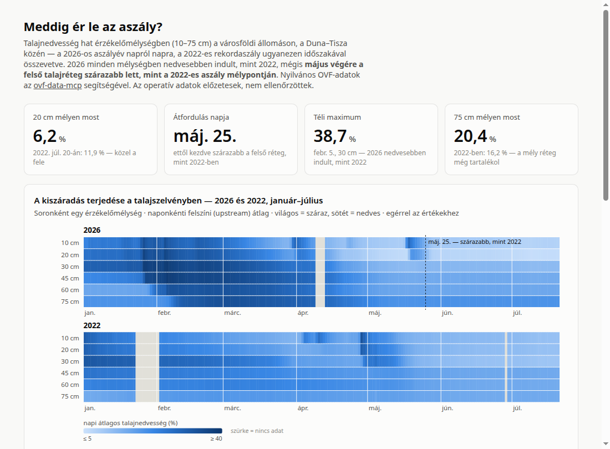
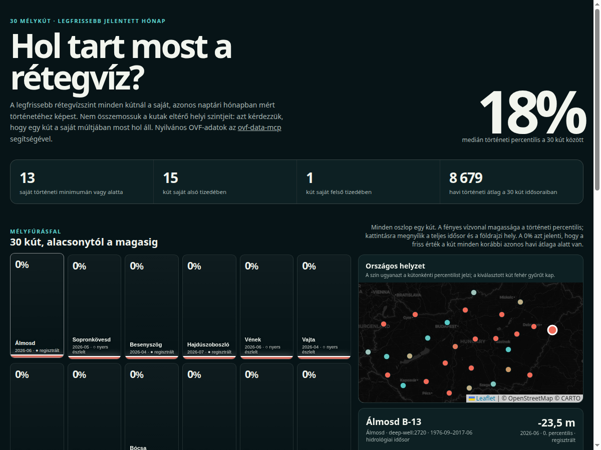

ovf-data-mcp — példa-adatvizualizációk
Önálló oldalak, amelyeket egy MI-ügynök készített nyilvános magyar vízügyi
adatokból (Országos Vízügyi Főigazgatóság), az
ovf-data-mcp parancssori eszközén
és MCP-szerverén keresztül. Minden szám visszavezethető az oldalak láblécében felsorolt
vizugy parancsokra — webes adatkinyerés és kézi adatletöltés nélkül.

Meddig ér le az aszály?
Hat érzékelőmélység Városföldön, 2026 a 2022-es rekordaszály ellen: nedvesebb indulás után május végére a felső talajréteg szárazabb lett, mint 2022-ben.

Hol tart most a rétegvíz?
Harminc térben szétterített mélykút legfrissebb jelentett hónapja, az azonos naptári hónap több évtizedes történetéhez mérve — a térkép mögötti valódi rangsor.

A Velencei-tó kilenc évtizede
Az agárdi vízmérce 92 éve — az 1930-as évek csaknem kiszáradt tavától 2026 júliusáig. A vízállás már a 2022-es mélypont alatt jár, utoljára 1938-ban volt ilyen alacsony.

A Duna egy éve, Balatonban mérve
Idén 47 km³ víz haladt át Budapestnél — mintegy 15 naponta egy Balatonnyi, a napi vízhozamokból összegezve.

A Homokhátság süllyedő talajvízszintje
Három sekély kút a Duna–Tisza közi hátságon, kutanként akár 92 évnyi adattal — a talajvízszint 1–3 métert süllyedt.

Egy árhullám útja a Dunán
Öt vízmérce Komáromtól Mohácsig: a 2026. februári tetőzés három nap alatt mintegy 320 folyamkilométert tett meg.

Milyen alacsonyak most Magyarország vizei?
Hat vízmérce a Dunán, a Tiszán, a Dráván és a Balatonon, mindegyik a saját 12 havi tartományában elhelyezve — valamennyi az alsó tizedben.

A Duna Budapestnél — az elmúlt 12 hónap
Napi átlagok minimum–maximum tartománnyal és a budapesti vízmérce árvízvédelmi készültségi szintjével.